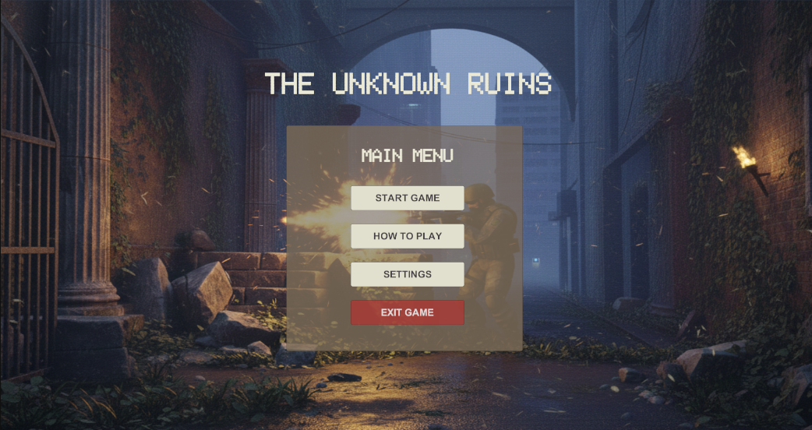

DESENVOLVIMENTO WEB
Run Club Vila Real
Aplicação móvel de corrida que combina tracking, rotas culturais em Vila Real e interação social.

THE Unknown Ruins
The Unknown Ruins é um jogo 3D em primeira pessoa onde um explorador enfrenta puzzles, armadilhas e inimigos inteligentes para escapar de um templo antigo.

RPS Game
Um jogo moderno de Pedra, Papel ou Tesoura. Focado em interatividade, utiliza JavaScript assíncrono e CSS Keyframes para criar uma experiência visual dinâmica e fluida.

Saltaricos do Outeiro
Website informativo focado na divulgação da associação e na comunicação para a comunidade jovem local.